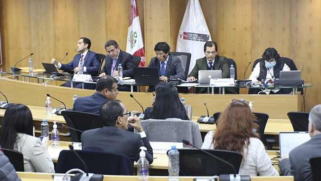

MTC inaugura almacenes de antracita en el Puerto de Salaverry
El MTC inauguró almacenes de antracita en el Terminal Portuario de Salaverry. La inversión supera los US$10 millones e incluye cuatro zonas de almacenamiento, vías de acceso, módulos, muros perimetrales, paravientos y servicios sanitarios y eléctricos. La obra, vía APP, optimiza la logística y fortalece la capacidad exportadora de antracita de La Libertad y Cajamarca. El ministro César Sandoval destacó su impacto en empleo y competitividad.
Ver más